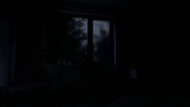

点封面在页面里播放（Vimeo / YouTube / X 需要代理；Vimeo 若没自动开始，再点一下播放键）。觉得好就点「喜欢」，有想法就写在下面的框里保存，我每天出日报前会读，存进偏好和审美库；会多找同类，但每天仍保持类型分散。
目录
- 01Does creatine really make you stronger?（竖版）
- 02This Huge Machine Can Detect Dark Matter
- 03ClashterPieces – 30 Seconds to Detonation（Clash Royale 预告）
- 04La Llama（西班牙设计动画短片，开场字幕段）
- 05make it pop: 002
- 06editions scrapbook: spoke highlight reveal
- 07Inline Hover Reveals（悬停单词弹出图片）
- 08AUGE Experience（Awwwards 当日最佳）
- 09Dominik Kostolnik 声音设计师网站
- 10unlimited tokens?（按住开火的钞票枪）
- －剔除（19 条，另有 1 条重复转发没算）
- 拆细拆：Vox 竖版讲解的「黄色荧光笔」包装
01知识讲解剪辑节奏
Does creatine really make you stronger?（竖版）
Vox · YouTube Shorts 2026-11-12 【看过视频】
 YouTube
YouTube106 秒全片完整看过（带声音）
黄底标题条、名字条、字幕高亮都是同一种黄
字体未识别（标题粗无衬线，名字条下面一行是斜体衬线）
好在哪106 秒的竖版讲解。开头接网友的 TikTok 片段，压一条黄底黑字标题；专家口播的名字条也是黄底。论文截图铺在灰白纸纹底上，关键句用黄框标出来，字幕念到哪个词哪个词变黄。后面穿插黑白老照片和一张手绘肌肉线稿
可借口播 + 证据的竖版模板：讲到数据就切一张纸纹底的原文截图，用同一种黄色把那句话涂出来，字幕也只亮一个关键词。全片只有一种强调色。下面有细拆
02知识讲解3D质感
This Huge Machine Can Detect Dark Matter
Cleo Abram · YouTube Shorts 2026-11-06 【看过画面（抽帧）】
53 秒全片已下载，抽 12 帧看过
剖面渲染颜色偏亮（紫和荧光绿），标签设计比渲染本身更值得学
字体未识别
好在哪53 秒。从矿道里戴头灯的实拍切进一个 3D 剖面：地下大水罐一层层剥开，里面是发绿光的液体罐，旁边标「7.5m」的尺寸条。标签都是深色底条配荧光绿箭头，中段一个圆形饼图讲 15% 和 85%，再回到实验数据图和实拍设备
可借讲一个看不见内部的机器时：先给一个真人实拍镜头定尺度，再切 3D 剖面一层层打开，标签和箭头统一一种荧光色。角落标「ARTISTIC RENDERING」（示意图）也值得学
03MG转场
ClashterPieces – 30 Seconds to Detonation（Clash Royale 预告）
Roof Studio / 导演 Pedro Allevato（Supercell） · Stash 2026-11-12 【看过画面（抽帧）】
45 秒全片已下载，抽 12 帧看过
片尾是游戏实录竖屏小窗和 Clash Royale 标志
客户要求不用 AI，全部手工逐帧（Stash 报道）
好在哪45 秒，水墨加水彩的逐帧 2D 动画，颜色几乎只有黑、米白、红，偶尔一笔蓝。转场靠一大笔黑墨或红墨扫满全屏再露出下一个画面。Stash 报道里导演说，背景先在 3D 里搭好让镜头能动，再逐帧手绘盖上去
可借转场可以用「一笔刷子扫过全屏」代替溶解：笔刷形状的遮罩从一侧拖过去，颜色只用片子里已有的那两三种。3D 打底再手绘的做法，可以换成 Three.js 出镜头运动、再加一层笔刷纹理
04片头片尾MG
La Llama（西班牙设计动画短片，开场字幕段）
Turbo（Pau López、Gerardo del Hierro）/ The Post Office · Motionographer 2026-11-12 【看过画面（抽帧）】
下载了前 2 分钟，抽 12 帧看过（全片约 399 秒）
角色设计 Jaime Hayon，演职员表里有十几位插画师（Motionographer）
红色字体未识别
好在哪全片约 6 分半，看了前 2 分钟。开场是黑底上的白色线稿：椅子、网格、曲线一笔笔画出来，演职员名单用红色粗字叠在线稿上。之后画风一段一段地换：蓝夜、做旧录像、红地板、高迪式彩色玻璃大眼睛
可借片头列名字（比如一期里要介绍的几个工具）：黑底白线稿慢慢画出物体轮廓，名字用一种醒目颜色的粗字压在上面。线稿 + 单色粗字，用 SVG 描边动画就能做
05字体版式代码动画
make it pop: 002
jhey（@jh3yy） · X 2026-11-12 【看过画面（抽帧）】
18 秒已下载，抽 12 帧看过
彩虹色偏艳，取的是「只动一个词」这个思路
字体未识别（粗无衬线）
好在哪约 18 秒。纯黑底上两行白色粗字「make it pop」，只有「pop」三个字母是彩虹镭射质感，鼠标划过时字母表面像液体一样流动变色，还会被推得轻轻晃动。其余文字完全不动
可借标题里只让一个关键词「活」起来：其他字纯白静止，那个词换成会流动的材质。镭射色比较跳，用在鱼知道里可以换成更收的单色金属或玻璃材质
06UI动效
editions scrapbook: spoke highlight reveal
jhey（@jh3yy） · X 2026-11-12 【看过画面（抽帧）】
19 秒已下载，抽 12 帧看过
原帖引用了 jhey 10-28 的「we dropped a new edition」那条
字体未识别
好在哪约 19 秒。深蓝底上一个内容面板，从标题前的小方点放射出一组细白线连到面板边缘，像辐条一样把视线拉过去。面板拖动变大变小时线跟着走，右下角显示尺寸数字；中段四周冒出几行手写注释
可借口播里要指出画面某一块时，不用红圈：从一个点放射几根细线连到那块区域的边缘，线随区域变化。底色单一、线条全白，很克制
07字体版式代码动画
Inline Hover Reveals（悬停单词弹出图片）
Codrops · X 2026-11-12 【看过画面（抽帧）】
21 秒已下载，抽 12 帧看过
Codrops 写的是 GSAP + WebGL，附在线 Demo
字体未识别
好在哪21 秒，演示一组「段落里悬停某个词就弹出东西」的效果：深灰紫底上一段浅色正文，带下划线的词被碰到时，旁边弹出一张小照片、一条横向胶片、一张便签，或者碎片拼出的图。每次只出一个，其余文字不动
可借口播字幕或文字卡里讲到具体东西（某个产品、某个人）时，在那个词旁边弹一张小图，停一下再收回。比全屏切图更轻，适合信息密的段落
08UI动效转场
AUGE Experience（Awwwards 当日最佳）
AUGE Experience / Awwwards · X 2026-11-12 【看过画面（抽帧）】
约 6 秒已下载，抽 12 帧看过
只有 6 秒，只能看到翻页和名单两种效果
字体未识别（压缩粗体）
好在哪约 6 秒。米白页面上竖排着客户名字，中间一个视频窗。滚动时整张页面的下边缘弯成弧形，像一张纸被拉起来，底下露出黑色，再翻成黑底页面。左边一列小缩略图跟着滚
可借两段内容之间的转场：让整张「纸面」的边缘弯起来翻走，露出下一层的颜色。比平移切换多一点实物感，可以用 Three.js 平面加顶点弯曲做
09字体版式UI动效
Dominik Kostolnik 声音设计师网站
Barry Baris Dogan / Codrops · X 2026-11-12 【看过画面（抽帧）】
21 秒已下载，抽 12 帧看过（无声看的）
颜色比平常推的跳，取它的大字 + 色条推出
字体未识别（斜体压缩粗体）
好在哪约 21 秒。黑底，大号斜体粗字一行一行出来，每行背后有一块紫、红、黄的色条从左往右推。开头是一排米色到橙色的胶囊条，像音量表。段落里个别词换成黄色，项目区是照片拼贴。Codrops 说站里大部分东西碰一下都会发声
可借关键词出场：黑底大字，背后先推一块色条再出字，三四行各用一个颜色。整片颜色多，用到鱼知道里建议只留一种颜色
103D质感代码动画
unlimited tokens?（按住开火的钞票枪）
jhey（@jh3yy） · X 2026-11-13 【看过画面（抽帧）】
28 秒已下载，抽 12 帧看过（无声看的，浏览器标签上有声音图标）
作者说枪可以自定义
字体未识别
好在哪约 28 秒。浏览器里一张米白页面，中间一行黑字「Unlimited tokens?」。一把小 3D 点钞枪跟着鼠标走，按住就喷出一沓沓绿色钞票，钞票是卷曲的薄片，边翻边往下飘。中段切到枪的特写，底下一排按钮能换枪身颜色和贴纸
可借和你喜欢过的贴纸物理是同一路：小物件有厚度、会翻转、有重力。讲「无限额度」「免费」这类话题时，可以做 2 秒钞票（或代币）从画面一角喷出来飘落的镜头，背景保持干净
剔除（19 条，另有 1 条重复转发没算）
Kurzgesagt · 高饱和纯扁平，讲解位今天已有两条
Wendover Productions · 卫星图加笔记本电脑框，模板感重
Ian Curtis（@XRarchitect，threejs 转发） · AI 模型展示帖，画面饱和度高
Sagar（@sarlloc，threejs 转发） · AI 模型展示帖，粉紫飘絮偏炫技

Leon Lin（@LexnLin，threejs 转发） · 画面写实克制，但整条在展示 AI 模型，镜头只是慢推
Heithon（threejs 转发） · AI 测试，卡通角色堆满街
Vimeo Staff Pick · 公园手持实拍，粗糙
今日细拆 · 知识讲解
一种强调色管到底：Vox 竖版讲解怎么把口播、论文和老照片串起来 【看过视频】
Vox 11 月 12 日发的竖版短片，问肌酸到底能不能让人变壮。106 秒，素材是网友 TikTok、运动生理学家 Nick Tiller 的口播、论文截图、黑白老照片和一张手绘线稿。它好学的地方是包装：标题条、名字条、论文高亮、字幕关键词，全部用同一种黄色。
结构（106 秒）
- 0:00–0:06 网友 TikTok 式第一视角开头 + 黄底黑字标题；左上角 Colgate「presented by」角标停约 5 秒
- 0:06–0:19 素材快剪：现代健身房 + 老式彩色田径片段，13 秒切 5 刀
- 0:19–0:24 Nick Tiller 口播
- 0:24–0:34 纸纹底论文截图
- 0:34–0:39 黑白老照片和老片段（健美）
- 0:39–0:45 口播
- 0:45–1:00 黑白老片段：健美、站上体重秤，接着一位女性在锻炼
- 1:00–1:10 口播
- 1:11–1:19 纸纹底论文截图
- 1:20–1:29 纸上手绘二头肌线稿，文字和图标一个个弹出来：绿勾、蓝问号、红叉
- 1:30–1:32 前后对比照片
- 1:32–1:41 口播收尾
- 1:42–1:46 黄色 Vox 片尾卡
节奏
口播镜头每个 5–10 秒（平均约 7.5 秒），证据画面 8–10 秒（平均约 9 秒）。开头快，讲证据时放慢，到手绘线稿段图标连续弹出又快起来，最后落在一段较长的口播上。
包装细节（看画面）
- 标题和名字条：黄底黑字的直角色块，无圆角无投影
- 名字条第二行是斜体衬线（字体未识别）
- 论文截图：放在灰白纸纹底上，截图本身带一点投影，镜头一直缓慢推近并轻微平移
- 黄色高亮框是直接弹出来的，不是一笔划过去，配一声荧光笔「刷」的音效
- 字幕：白字加淡投影，每段 6–10 个词，底部居中 1–2 行，正在念的词变黄
- 声音：全程一条轻快、有点俏皮的配乐；绿勾和问号出来时「叮」一声，红叉配刺耳的蜂鸣
- 整片的强调色只有这一种黄
转场
口播和证据画面之间全部硬切，没有任何转场效果。画面的「动」靠截图自己的慢推和高亮框弹出，不靠转场。
在 Remotion 里怎么做（我的做法建议）
- 做一个
<Highlight> 组件：文字后面一个黄色矩形，到点直接出现（不做动画），同一帧放一个「刷」的音效 - 论文截图放在一张纸纹图上，整段用
interpolate 让 scale 从 1 慢慢到 1.08 左右，同时轻微平移 - 字幕按词拆开，按时间轴把正在念的词变黄，其他保持白字加淡投影
- 口播和截图之间直接硬切
- 标题条和名字条复用同一个黄色常量，保证全片只有一种强调色
放进鱼知道的片子里怎么用
工具实测里引用官方博客或论文时：别直接贴网页截图，放到一张纸纹底上，把要说的那句用黄色划出来，字幕同时亮同一个词。片头标题条、嘉宾或工具名字条也用这个黄，整期就有统一的「证据感」。
看 YouTube ↗长版 Creatine, debunked ↗